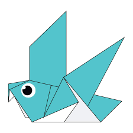

How to make origami animals :-

1) Origami Flying Cicada
Facts about a Cicada-
a) They have one of the longest insect lifespans.
b) There are more than 3000 different species of cicadas existing.
c) Their wings repel water and bateria
To see how to make a flying cicada step by step click on the link below :

2) Origami pegion
Facts about a Pegion-
a) Pigeons are incredibly complex and intelligent animals.
b) Pigeons are renowned for their outstanding navigational abilities.
c) Pigeons are highly sociable animals.
To see how to make a pegion step by step click on the link below :